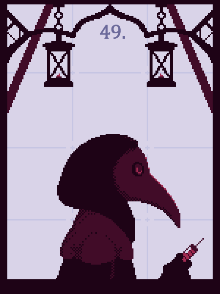
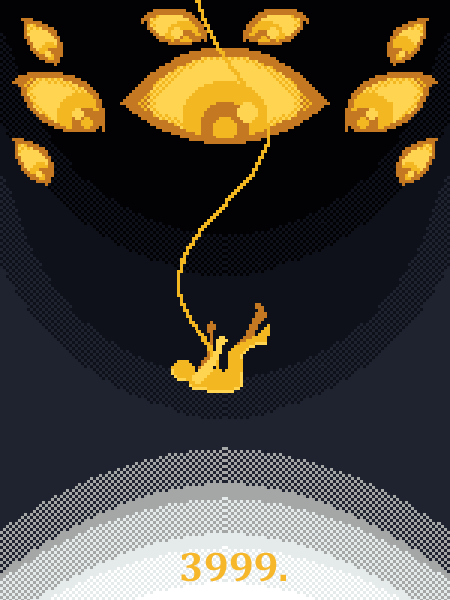
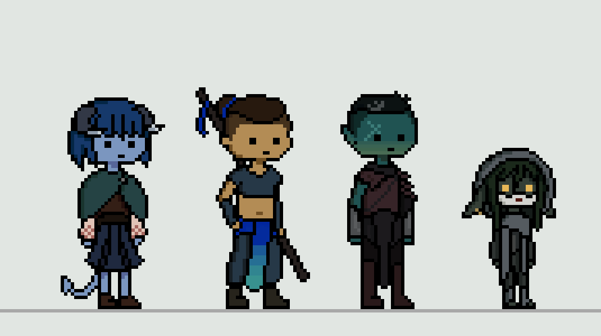
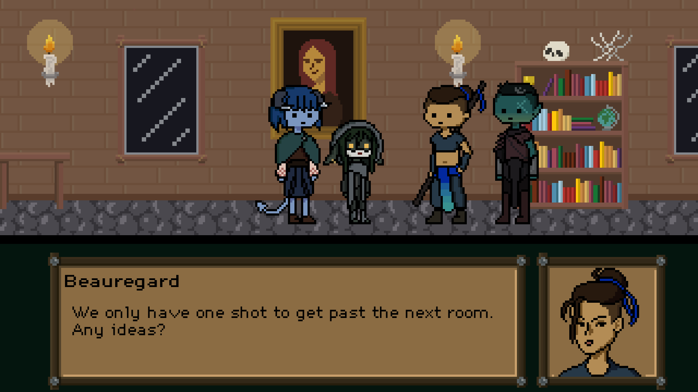

Pixel Art
These are the first pixel art drawings that I have ever created. Based off of the SCP website, I experimented with different colours and shading ideas in a limited canvas.


These are some pixel art assets and ideas for a game I am wanting to make based off of the DnD show Critical Role. I created some idle animations for some of the characters, as well as a screenshot of what the game would look like.

